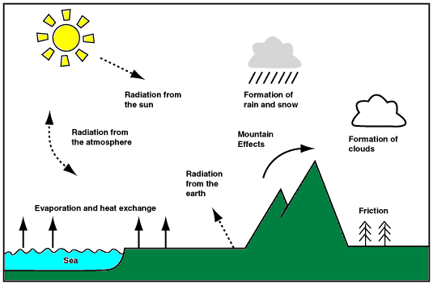

The use of computers has played a key role in improving the accuracy and detail of weather forecasts, and in lengthening the period for which useful guidance can be given. The calculations involved are both numerous and complex and must be performed quickly so that forecasts are available in good time. Consequently, some of the most powerful computers in the world are needed.
The computer model
Weather forecasts are based on the solution of a set of mathematical equations which describe certain physical processes in the atmosphere. To solve these complex equations it is first necessary to divide up the atmosphere into boxes, with a gridpoint in the centre of each box. The properties of the atmosphere are then represented by what is happening at each of the gridpoints. The array of gridpoints, the system of equations and the method of solving the equations is referred to as the model. In the present global model used by The Met. Office, the gridpoints are at 20 levels in the vertical. There are also 217 points from pole to pole, and 288 points round each latitude circle (corresponding to a gridpoint separation of about 80 km near the UK). This is a large number of grid points!
Some of the physical processes represented in computer models used to forecast the weather 
The observations taken at a particular time can be used to compute the gridpoint values of pressure, temperature, humidity and wind. This set of values (the computer analysis) then represents the atmosphere at the start of the forecast. Using the mathematical equations, a 15-minute forecast can be made of the pressure, temperature, humidity and wind. Once all the new values have been calculated, the process starts again with another 15-minute forecast being made. By repeating this procedure many times over, a forecast out to six-days can be built up. The supercomputer at The Met. Office only takes about 15 minutes to produce a six day global forecast.
The global forecast is produced twice a day using the midnight and midday observations as starting conditions. To provide detailed forecasts out to 36 hours over the UK, a model with half the distance between gridpoints over a limited region (covering the North Atlantic and Europe) is run four times a day. As well as giving forecasts of pressure, temperature, humidity and wind, the computer models also make forecasts of cloud and rain. For local forecasts up to 18 hours, The Met. Office has led the way in developing a model which has a 15 km horizontal grid and covers the British Isles and vicinity. This mesoscale model is especially good at taking into account the local effect of hills and the contrast between land and sea.
Role of the Forecaster
Despite greater computer power, improvements to the computer models, and other technological advances, there is still an important role for the forecaster. For the general development of weather systems, the model provides insight into how the atmosphere is behaving and developing, but it is only a guide. Good as it is, forecasters have to make allowances for the model's known problem areas - the handling of small-scale features, for example. They also have to take into account any late observations and consult the latest satellite and radar pictures.
In providing specific services to individual customers, the local forecaster based at an airfield or Weather Centre will take the process even further. Experience and local knowledge add the fine detail to the computer forecast, so that the best advice for a specific location (e.g. an oil rig) can be given.
There is no doubt that the combination of man and computer together produces the best results.
![[Left]](../../pics/left.gif)
![[Up]](../../pics/up.gif)
![[Right]](../../pics/right.gif)
![[Home]](../../pics/home.gif)